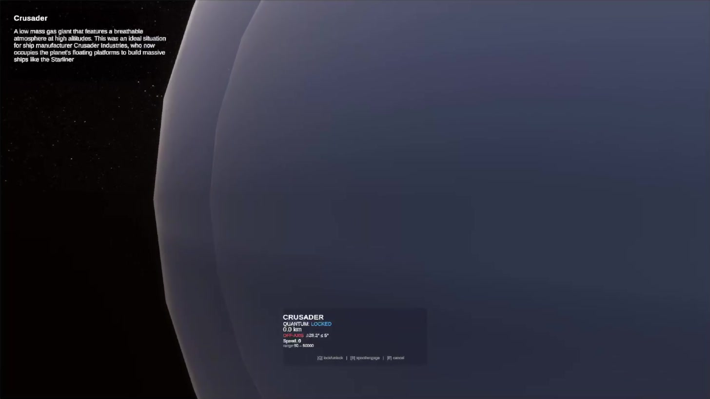
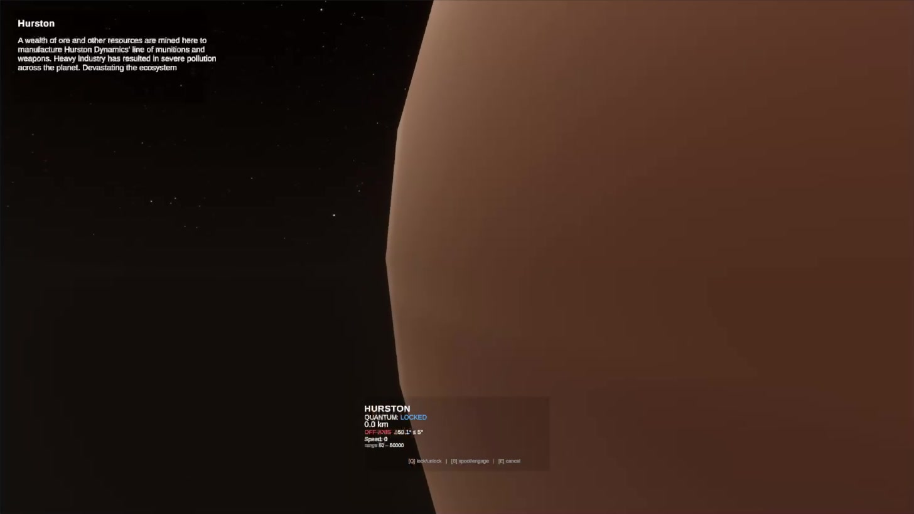

Star Citizen Replica
Fall 2025 · Interactive 3D environment · Unity
Built from my love of Star Citizen, this independent Unity project recreates the Stanton system at a 1:1 in-game scale. Players can travel between planets using quantum travel, accompanied by music. As they approach a planet, an information panel introduces its details.


Independent fan project based on Star Citizen. Select a screenshot to view it full size.
Open demonstration video